簡単な仕組みはハードマージンSVMを参照してください。 JavaScript+SVGで実装した例があります。
データ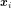が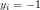と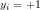のどちらかのクラスに分類されているものとします。 この分類が線形分離可能で、 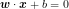 で表される超平面で完全に分類できるものと仮定します。 ここで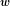は重みベクトル、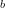はバイアスパラメータです。
超平面の方程式は両辺を定数倍しても変わらないので、一つに決めることができません。 そこで、二つの超平面 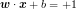 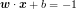 の間(下図の点線の間)にはデータが存在しないという条件をつけることにします。 この条件は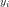を使って次のように表すことができます。 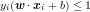
このような条件下ではマージンは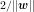とかけます。 マージン最大化問題は、これを最大化するパラメータを求める問題と考えることができます。
ただし、これを直接最大化するは難しいので、次のように書き換えておきます。
の条件下で 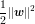 を最小化する。
上の最小化問題は、条件式がありそのまま扱うのは面倒です。 そこで、ラグランジュの未定乗数を導入し、 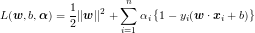 の最小化と置き換えます。 このとき、不等式制約条件を持つ関数最適化問題の一種なのでKKT条件から次の条件を満たす必要があります。 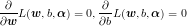 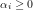 これから 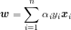 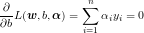 が得られます。するとラグランジュ関数を次のように書き換えることができます。 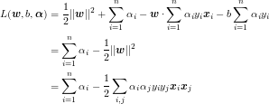
以上のことをまとめると、 の条件下で、 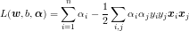 を最小化する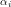を求める問題に帰着できました。 この問題は二次計画問題と呼ばれる問題で、局所解が最適解になることが保証されており、効率的に解くアルゴリズムがいくつか知られています。
このとき で重みを求めることができます。 さらに、bの値はKKT条件の相補条件から、が0で無いベクトル(サポートベクトル)から 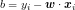 となります。
この問題は一般的な二次計画問題として解くこともできますが、SVMに対して有効なアルゴリズムがいくつか提案されています。 代表的なものがSMO(Sequential Minimal Optimization)アルゴリズムです。
一度にすべての変数考えることは難しいので、いくつか適当な変数を選び、これらの変数に関する最適化問題を考えます。 他の変数は定数と考えます。 この部分問題を最適化をすることによって、元の問題も最適解へ近づくはずだ、と言うのがSMOの基本的な考え方です。
1つの変数をいじると、拘束条件を満たすために最低もう一つ変数を選んで変更しなければなりません。 そこで、適当な二変数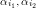を選んで、この二変数に対する最適化問題を考えます。
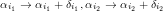に置き換えるとします。 このとき、目的関数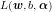から関係する項だけを抜き出したものを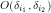とすると 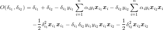 となります。また、制約条件から 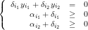 です。
制約条件から、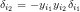なので、 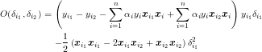 となります。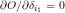より 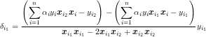 と、更新式が得られます。ただし、制約条件を満たすように、クリッピングする必要があります。
２変数の選び方には、ランダムに選ぶ、KKT条件を満たさないものから順に選ぶなどの さまざまな手法が提案されています。 ハードマージンSVMでの実装はランダムに選択しています。